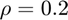

Normalized MSE plot comparing the shrinkage estimators
We compute the TABASCO estimator and the Ledoit-Wolf estimator (LWE)by Ledoit and Wolf (2004) in the setting, where the data is generated from a multivariate normal distribution (MVN) with an AR(1) covariance matrix. The correlation parameter is this example is . This example will reproduce the Figure~3 (upper left corner plot) for Tabasco and LWE estimators.
To compute the LWE you need to istall the RegularizedSCM toolbox from: http://users.spa.aalto.fi/esollila/regscm/ or use thise direct link: http://users.spa.aalto.fi/esollila/regscm/RegularizedSCM.mltbx
REFERECE
[1] E. Ollila and Arnaud Breloy, "Regularized Tapered or Banded Sample Covariance Matrix", ArXiv preprint, submitted for publication, Sept. 2021.
Contents
Initalize tabasco parameters:
clearvars; clc; p = 100 vec_k = [1:30 p-29:p]; % bandwidth Wtype = 'band' method = 'ell1' mu_known = false
p =
100
Wtype =
'band'
method =
'ell1'
mu_known =
logical
0
Model parameters
% mean vector: mu = 10*randn(p,1); % AR(1) covariance matrix: rho = 0.2; tmp = abs(repmat(1:p,p,1) - repmat(1:p,p,1)'); M = rho.^tmp; % covariance matrix Msqrt = sqrtm(M); normMsq = trace(M^2);
Start the simulation
NRsamples = 1000; % number of MC trials (NOTE! In our paper we used 5000) nlist = 10:15:115; % sample sizes betav = zeros(length(nlist),2); % betas for LWE and Tabasco NMSE = zeros(length(nlist),2); % NMSE-s for each n
tic; parfor ii = 1:length(nlist) n = nlist(ii); NMSE0 = 0; NMSE1 = 0; NMSE2 = 0; NMSE3 = 0; NMSE4 = 0; NMSE5 = 0; %NMSE6 = 0; NMSE7 = 0; beta1 = 0; beta2 = 0; beta3 = 0; %beta4 = 0; %beta5 = 0; beta6 = 0; beta7 = 0; rng('default'); % set random seed for jj=1:NRsamples % data generation X0 = randn(n,p); X = X0*Msqrt + repmat(mu.',n,1); % LWE [EST1,~,stat1] = regscm(X,'approach','lw','verbose','off'); NMSE1 = NMSE1 + norm(EST1 - M,'fro')^2/normMsq; beta1 = beta1 + stat1.beta; % Tabasco [S_tabasco, be_bst, kbest] = tabasco(X,vec_k,method,Wtype,[],mu_known); NMSE2 = NMSE2 + norm(S_tabasco - M,'fro')^2/normMsq; beta2 = beta2 + be_bst; end betav(ii,:) = [beta1 beta2]/NRsamples; NMSE(ii,:) = [NMSE1 NMSE2]/NRsamples; end toc;
Elapsed time is 10.166053 seconds.
PLOT 1: NMSE as a function of n
set(0, 'DefaultLineLineWidth', 2); figure(1); clf hold on; plot(nlist,NMSE(:,1),'rv-','MarkerSize',12,'DisplayName','LWE') plot(nlist,NMSE(:,2),'bo-','MarkerSize',12,'DisplayName','Tabasco') grid on; box on; axis tight; set(gca,'FontSize',20,'LineWidth',1.5,'FontName','Helvetica'); xlabel('$n$','Interpreter','Latex','FontSize',24) ylabel('NMSE','FontSize',24); legend('Orientation','vertical','FontSize',22,'Interpreter','Latex'); legend boxoff;

PLOT 2: beta values as a function of n
figure(2); clf; hold on; plot(nlist,betav(:,1),'rv-.','MarkerSize',12,'DisplayName','LWE') plot(nlist,betav(:,2),'bo-.','MarkerSize',12,'DisplayName','Tabasco') set(gca,'FontSize',20,'LineWidth',1.5,'FontName','Helvetica'); xlabel('$n$','Interpreter','Latex','FontSize',24) ylabel('\beta','FontSize',24) grid on; box on; xlim([nlist(1) nlist(end)]); legend('Orientation','vertical','Location','best','FontSize',17,'Interpreter','Latex'); ylim([-0.001 1.001])